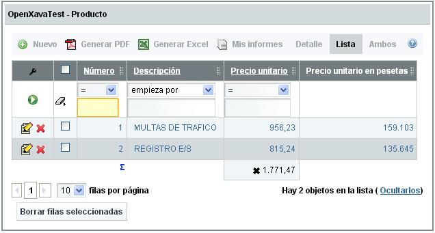
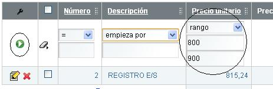
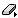
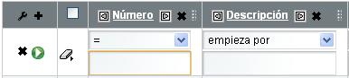
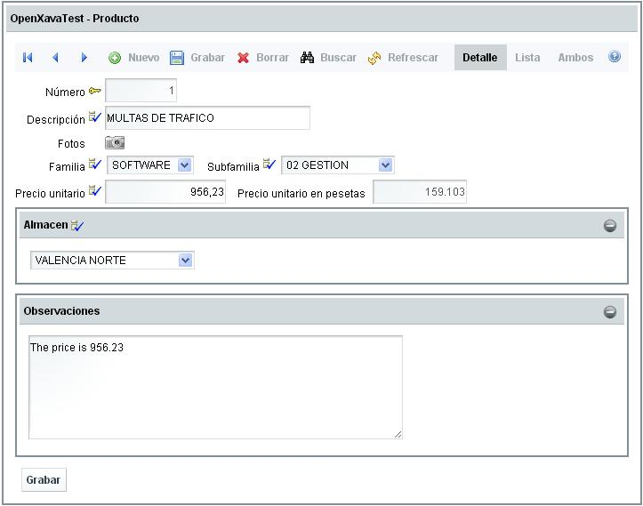

Ayuda para el usuario
Modo lista

Mediante este módulo el usuario podrá:
- Filtrar por cualquier columna o combinación de ellas: basta introducir los valores deseados en las columnas y pulsar sobre el botón Filtrar
 .
.

Actualmente las opciones disponibles para filtrar son: empieza por, termina en, contiene, no contiene, =, <>, >=, <=, >, <, en grupo (valores separados por ,), no en grupo (valores separados por ,) y rango (desde, hasta).
Para limpiar el filtro pulsaremos el botón Borrar valores del filtro  - Generar informes: pulsando sobre los botones
 o
o  se ejecutará un informe (en formato PDF o Excel) con los datos que haya en pantalla. Si el navegador está configurado para bloquear ventanas emergentes, es necesario añadir el sitio de la aplicación OpenXava a la lista de excepciones, si no no funcionará.
se ejecutará un informe (en formato PDF o Excel) con los datos que haya en pantalla. Si el navegador está configurado para bloquear ventanas emergentes, es necesario añadir el sitio de la aplicación OpenXava a la lista de excepciones, si no no funcionará. - Ordenar por cualquier columna: basta con pulsar sobre el encabezado de la columna:

Te permitirá ordenar ascendente (pulsando una vez) o descendentemente (al pulsar una segunda vez). - Editar un registro: pulsando en cualquier parte de la fila, pulsando sobre el icono de editar
 , o pulsando sobre el vínculo de detalle.
, o pulsando sobre el vínculo de detalle. - Borrar registros: pulsando sobre el botón Borrar filas seleccionadas o el botón
 disponible en cada fila. Podremos borrar varios registros seleccionando el botón borrar de la parte inferior o bien borrar uno solo seleccionando el botón de borrado que hay en cada fila:
disponible en cada fila. Podremos borrar varios registros seleccionando el botón borrar de la parte inferior o bien borrar uno solo seleccionando el botón de borrado que hay en cada fila:

- Personalizar la lista: pulsando sobre el icono de personalizar
 , el usuario podrá modificar la lista añadiendo, quitando o moviendo el orden de los campos:
, el usuario podrá modificar la lista añadiendo, quitando o moviendo el orden de los campos:

Mediante los botones y
y  , se podrán mover las columnas a la izquierda o a la derecha; y con
, se podrán mover las columnas a la izquierda o a la derecha; y con  se eliminará una columna de la fila o pulsando el que hay al lado de Filtrar se eliminará la posibilidad de hacer el filtro en esa lista.
se eliminará una columna de la fila o pulsando el que hay al lado de Filtrar se eliminará la posibilidad de hacer el filtro en esa lista.
Pulsando sobre se accederá a una lista con todos los campos disponibles para ese mantenimiento,
se accederá a una lista con todos los campos disponibles para ese mantenimiento,

de esta forma bastaría con seleccionar los campos deseados y pulsar sobre el botón Añadir columnas a la lista.
Modo detalle

Mediante este modo el usuario podrá:
- Navegar entre los distintos registros de la lista: mediante los botones
 , se podrá acceder al primer registro o a los registros anteriores o posteriores al visualizado.
, se podrá acceder al primer registro o a los registros anteriores o posteriores al visualizado. - Grabar nuevo registro: primero pulsando sobre el botón para dar de alta nuevo registro
 después rellenando los datos por pantalla y finalmente pulsando sobre el botón de guardado
después rellenando los datos por pantalla y finalmente pulsando sobre el botón de guardado 
- Eliminar registro: una vez estés visualizando el registro deseado, basta con pulsar sobre el botón de borrar
- Buscar un registro: pulsar sobre el botón de buscar
 , aparecerá un cuadro de diálogo para poder introducir los datos deseados a buscar:
, aparecerá un cuadro de diálogo para poder introducir los datos deseados a buscar:

- Refrescar pantalla: refrescará los datos del registro visualizado. Descartará las modificaciones que no hayan sido grabadas y se recuperará los valores iniciales.